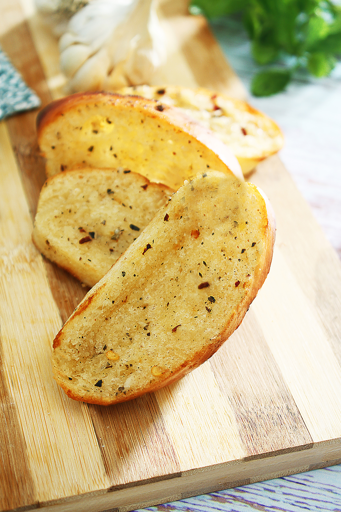

Garlic Bread

Description
Toasted white bread topped with garlic, butter, and asiago cheese
Ingredients
- 8 slices of white bread
- 1 tbsp of butter per slice
- 2 tbsp garlic spread per slice
- 1 pinch of asiago or parmesan cheese per slice
Steps
- Place slice of white bread in toaster for preferred level browness
- Spread butter and garlic spread on toast liberally
- Sprinkle asiago or parmesan cheese on top